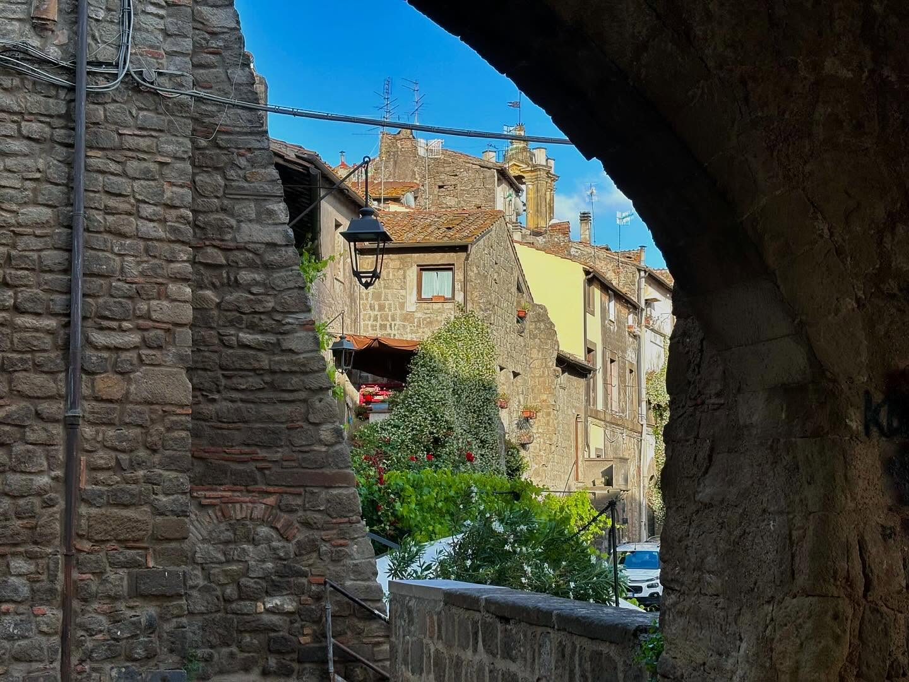

Pranzo
Ricette viterbesi e laziali, porzioni generose e sapori netti: il pranzo giusto per chi cerca gusto autentico anche in pausa.
Scopri il menu pranzoLa tradizione viterbese incontra l'incanto di un quartiere medievale unico: archi in pietra, luci soffuse e una cucina autentica da vivere con calma.
Tre momenti diversi, un'unica firma: qualita selezionata, ospitalita sincera e il fascino senza tempo del centro medievale di Viterbo.
Ricette viterbesi e laziali, porzioni generose e sapori netti: il pranzo giusto per chi cerca gusto autentico anche in pausa.
Scopri il menu pranzo
Nel richiastro interno, tra pietra antica e luci calde, il tuo aperitivo diventa un rituale elegante e conviviale.
Scopri l'aperitivo
La sera si accende tra archi in pietra, vini selezionati e piatti che raccontano la tradizione in chiave contemporanea.
Scopri la cenaIn Via Cardinal Pietro La Fontaine 12, Il Cardinale Bistro vive dentro una cornice storica del 1200. Ogni dettaglio unisce pietra, legno e luce in un'atmosfera raffinata ma accogliente.
Dal pranzo alla cena, passando per l'aperitivo nel romantico richiastro interno, il locale offre un'esperienza pensata per chi ama la cucina della tradizione con cura e personalita.


Una selezione di scatti reali dal bistro: il racconto visivo di un locale apprezzato per accoglienza, autenticita e qualita.